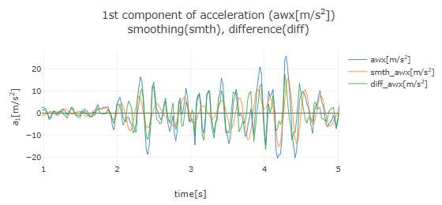
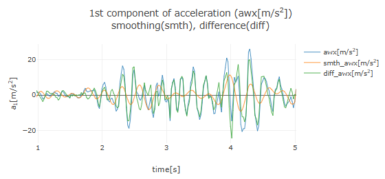
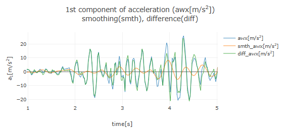
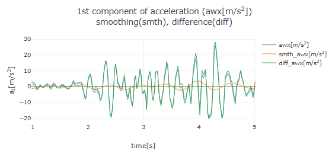

[ Operation Guide ]
■ Data Smoothing by Fourier Transform
This application offers two methods for data smoothing (noise removal): one using Fourier Transform and another based on Least Squares Approximation.
Here, as an example, we will explain how to smooth data using Fourier Transform, assuming acceleration data as shown below has been obtained.

After loading the acceleration data and setting the time domain for analysis, a graph of the acceleration data will be displayed, along with an area labeled "Smoothing of acceleration data" below it. Clicking the "▶ Smoothing by Fourier transform" row will display the Fourier transform settings. If the time interval of the measured data is not constant, leave the checkbox selected and adjust the number of time decompositions for the Discrete Fourier transform using the slider as needed. Press the "Fourier transform" button to perform the Fourier transform on the acceleration data, and the amplitude spectrum will be plotted as shown below.
The amplitude spectrum indicates the frequency components of oscillations present in the acceleration data. In the above figure, signals near 4.46Hz are prominent.
By observing the frequency of the oscillation components in the amplitude spectrum and setting the "Cutoff frequency" displayed below it, pressing the "Smoothing by inverse Fourier transform" button will remove signals with frequencies higher than the cutoff frequency through an inverse Fourier transform. That is, high-frequency components above the cutoff frequency are removed from the data. The smoothed acceleration graph from the inverse Fourier transform is overlaid on the original graph, as shown below (cutoff frequency set to 4.95Hz).

Here, the orange line (smth_awx) represents the smoothed data, and the green line (diff_awx) shows the difference data (the original data minus the smoothed data). Observing the smoothed data graph (orange line), it is clear that fine high-frequency oscillations above 4.95Hz have been removed from the original data.
The smoothed data with decreasing cutoff frequencies of 3.96Hz, 2.97Hz, and 1.98Hz are shown below. It demonstrates how the frequency of oscillation components in the smoothed data gradually decreases.

Smoothing with a cutoff frequency of 2.97Hz

Smoothing with a cutoff frequency of 1.98Hz


Once the acceleration data has been smoothed, an area for "Selection of acceleration data for numerical integration" will appear, allowing you to choose between "Original data," "Smoothed data," or "Difference data" for velocity calculation. Additionally, pressing the "Clear smoothing" button will remove the smoothed and difference data graphs.
The same smoothing process using Fourier Transform can also be applied to velocity and position data.